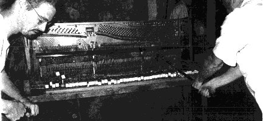

Frodus' Favorite Music
CD's Played in the Frodus Studio

The members of Frodus have an extensive collection of classical music. The following is a list of some of the CD's that have been played in the Frodus studio over the past year.
Each instance of a CD listening session is electronically logged in our CD database.
This database is then sorted by date of composition and then by last name
of composer within that particular century. Multiple entries for a single composer are then
concatenated into a single listing for that composer. A perl script then automatically generates this html file.
This listing was last updated: September 7th, 1995
BYRD, William *Keyboard Musick, Mass in 4 Parts
CAVALIERI, Emilio de Rappresentazione di anima e di corpo
DES PREZ, Josquin *Masses, Motets
DOWLAND, JohnAyres, Lute Music
DUFAY, Guillaume Hymns, Choruses, Songs
GABRIELI, Giovanni*Canzoni for Brass Choirs, Sonata pian' e forte
GESUALDO, Don CarloMadrigals
GIBBONS, Orlando Church Music
GREGORIAN CHANT *(see Choral Collections Section in Opus)
ISAAC, HeinrichChoral Music
LASSUS, Orlandus*Madrigals, Motets
MACHAUT, Guillaume deNotre-Dame Mass
MONTEVERDI, ClaudioLagrime d'Amante, La Favola d' Orfeo (opera), L'Incoronazione di Poppea (opera), *Madrigals, Vespro della Beata Vergine
MORLEY, Thomas Elizabethan Madrigals
PALESTRINA, Giovanni Motets, Hodie Christus natus est (Christmas Mass), *Missa Papae Marcelli
PRAETORIUS, Micheal *Terpsichore
TALLIS, Thomas Lamentations of Jeremiah
VICTORIA, Tomas Luis deMotets, Mass: O Magnum Mysterium
WEELKES, ThomasChoral Music, ABEL, Carl Friedrich Symphonies Op. 7
ALBINONI, Tomaso Adagio in G minor, Concerti a cinque Op. 5 , *Concerti for Oboe Op. 7 & 9
ARNE, Thomas Augustine Symphonies
BACH, Carl Philipp Emanuel Magnificat, Concerto in A for Cello, Concerti for Flute , Concerto in E flat for Harpsichord & Piano, Concerti for Oboe , Hamburg Concerti , Sonatas for Flute & Continuo , *Symphonies Wq. 174, 175, 178-183
BACH, Johann Christian Concerti for Harpsichord or Fortepiano , Overtures , Quintets for Flute, Oboe & Strings, Symphonies Op. 3
BACH, Johann Sebastian*Art of the Fugue , *Brandenburg Concerti, Cantatas (Nos. 4, 78, 82, 140, 202), Chromatic Fantasy & Fugue for Harpsichord, *Concerti for Harpsichord(s) (1, *5), *Concerti for Violin (1, 2), *Concerto in d for 2 Violins, Fantasia & Fugue in g for Organ, *Goldberg Variations for Harpsichord, Inventions for Harpsichord , Italian Concerto for Harpsichord, Jesu, Joy of Man's Desiring, Magnificat, *Mass in b, Musical Offering , Partitas for Harpsichord , *Passacaglia & Fugue in c for Organ, *St. Matthew Passion, Sonatas & Partitas for Violin Unaccompanied, Sonatas & Partita for Flute & Continuo, Suites for Cello , Suites for Harpsichord (English & French) , *Suites for Orchestra, Toccatas for Harpsichord , Trio Sonatas BWV 525-530 & 1036-1040 , *Toccata & Fugue in d for Organ, Well-Tempered Clavier for Harpsichord
BACH, W.F. Concerti , Sinfonia
BIBER, Heinrich IgnazBattalia, Sonatas "Rosary" for Violin & Continuo , Sonatas "Fidicinium Sacro-Profanum"
BOYCE, William Symphonies Op. 2
BUXTEHUDE, DietrichOrgan Music
CHARPENTIER, Marc-AntoineLouise (opera), Musique de theatre
CORELLI, Arcangelo*Concerti Grossi Op. 6, Sonatas Op. 5 , Trio Sonatas Op. 1-4
CORRETTE, Michel Organ Concerti Op. 26
COUPERIN, Francois d'Apotheose de Corelli , d'Apotheose de Lully , *Concerts Royaux , Les Gouts-renuis ou Nouveaux , Les Nations , *Pieces de clavecin
DELALANDE, Michel RichardCaprices (Symphonies for the King)
D'ANGLEBERT, Jean-HenriPieces de clavecin, Organ Music
FASCH, Johann Friederich Sonatas (Trio & Quadro)
FISCHER, Johann Caspar Pieces de clavessin
FRESCOBALDI, GirolamoCanzoni for Recorder & Continuo , Harpsichord/Organ Music
FROBERGER, Johann JakobSuites de clavecin
GAY & PEPUSCHBeggar's Opera
GEMINIANI, Francesco Concerti Grossi Op. 3 , Concerti Grossi Op. 7
GOLDBERG, Johann GottliebConcerti for Harpsichord
HANDEL, George FridericAcis and Galatea (oratorio), Arias, Concerti Grossi Op. 3 , *Concerti Grossi Op. 6, Concerti for Organ Op. 4 & 6, Harmonious Blacksmith for Harpsichord, *Messiah (oratorio), Operas (Flavio, Tamerlano), Royal Fireworks Music, Solomon(oratorio), Sonatas for Flute or Recorder & Harpsichord, Suites for Harpsichord, Susanna (oratorio), Trio Sonatas Op. 1, 2 & 5, *Water Music
HEBDEN, John Concerti Op. 2a
LECLAIR, Jean MarieConcerti for Violin, Sonatas Op. 1, 2, 5 & 9
LOCATELLI, PietroConcerti for Violin Op. 3 & 7, Sonatas for Flute Op. 2
LOEILLET, Jean BaptisteSonatas for Recorder & Harpsichord
LULLY, Jean Baptiste Atys (opera), Ballet Music
MANFREDINI, FrancescoChristmas Concerto
MARAIS, MarinSuites & Pieces for Viola da Gamba
MARCELLO, Alessandro Concerto for Oboe, Concerti "La Cetra"
MUFFAT, GeorgConcerti Grossi , String Sonatas "Armonico Tributo" , Suites "Florilegium" I & II , Toccatas "Apparatus Musico-Organisticus"
PACHELBEL, JohannCanon & Gigue in D Major , Hexachordum Apollinis for Harpsichord or Organ , *Organ Music
PERGOLESI, Giovanni Battista Stabat Mater, *La Serva padrona
PURCELL, Henry Anthems, *Dido and Aenas (opera), Fantasies, *Sonatas for Strings & Continuo , Sonata for Trumpet; Trumpet Tunes
QUANTZ, Johann Joachim Concerto in G for Flute
RAMEAU, Jean PhilippeBallet Music, Les Indes Galantes for harpsichord, *Pieces de Clavecin, Pieces de Clavecin en Concerts
ROMAN, Johan Helmich Sinfonias , The Drottningholm Music , The Golovin Music
SCARLATTI, AlessandroConcerti Grossi
SCARLATTI, Domenico *Sonatas for Harpsichord
SCHUTZ, Heinrich Motets; Psalms
SEIXAS, Jose Antonio Sonatas for Harpsichord
SOLER, Padre Antonio Concerti for 2 Organs, Fandango, Sonatas for Harpsichord
STANLEY, JohnOrgan Concerti Op. 10 , String Concerti Op. 2 , Voluntaries for Organ
TARTINI, GiuseppeConcerti for Violin , Sonata for Violin "Devil's Trill"
TELEMANN, Georg PhilippConcerti (for oboe, flute, violin, viola, etc.), Essercizii musici , Fantasias for Oboe or Flute , *Musique de Table, Paris Quartets , Sonatas for Flute, Oboe & Continuo, *Suite in a for Flute & Strings, Sonatas for Recorder & Harpsichord, Water Music Suites ("Hamburg Tides")
TORELLI, GiuseppeConcerti Grossi Op. 8
VIVALDI, Antonio*Four Seasons, *Concerti (for bassoon, oboe, flute, etc.), Gloria, Sonatas for Flute or Oboe & Continuo Op. 13 , Sonatas for Cello & Continuo Op. 14
WASSENAER, Unico Wilhelm Concerti Armonici
WEISS, Sylvius Leopold Lute Suites & Sonatas
ZELENKA, Jan DismasTrio Sonatas , BEETHOVEN, Ludwig vanAn die ferne Geliebte, *Concerti for Piano (1-3, *4, *5), *Concerto for Violin, *Concerto for Piano, Violin & Cello , Diabelli Variations for Piano , Eroica Variations for Piano , Fidelio (opera), Missa Solemnis, Octet in E flat for Winds, Overtures, *Quartets 7-16 (*8, *14), Quintet in E flat for Piano & Strings, Serenade & Trios for Strings Op. 3, 8 & 9 , Sextet in E flat for Winds, *Sonatas for Piano (*8, *14, 21, *23, *29), Sonatas for Cello & Piano (1-5) , *Sonatas for Violin & Piano (5, 9), *Symphonies (1, 2, *3, 4, *5, *6, 7, 8, *9), Trios for Piano & Strings (1-11)
BELLINI, VincenzoOperas (La Sonnambula, Norma, I Puritani)
BOCCHERINI, LuigiConcerti for Cello, *Quintets for Guitar & Strings (3, *4, 5, 6) , Quintets for Strings , Symphonies
BOIELDIEU, Francois-Adrien Concerto for Harp
CIMAROSA, Domenico Concerto for Oboe
DANZI, Franz Quintets for Winds
DITTERSDORF, Karl Ditters vonConcertante for Countabass & Viola, Sinfonia, Symphonies "Metamorphoses"
GLUCK, Christoph Willibald Iphigenie en Tauride (opera), Orfeo ed Euridice (opera)
FIELD, JohnConcerti for Piano (7) , Nocturnes
HAYDN, Franz JosephConcerti in C & D for Cello, Concerti for Horn, Concerti for Keyboard, *Concerto in E flat for Trumpet, Creation, Mass #7 ("Paukenmesse"), Mass #9 ("Nelson"), *Quartets Op. 71, 74, 76 & 77 (*76/3 "Emperor"), Sonatas (miscellaneous) for Piano, *Symphonies (6-8,*45,88,*94,100,*101,103,*104), Trios for Flute & Strings (various) , Trios for Piano & Strings (various) , Variations for Piano
HOFFMANN, Johann Concerto for Mandolin
HUMMEL, Johann Nepomuk Concerti for Piano , Sonatas for Piano
MERCADANTE, Giuseppe Concerti for Flute
MOZART, Wolfgang Amadeus Arias, Concerto for Clarinet, *Concerti for Flute, K.313 & 314, *Concerti for Horn #1-4, *Concerti for Piano (7-19,*20,*21,*23,24,25,27), Concerto #10 in E flat for 2 Pianos, Concerti for Violin (#3-5), Cosi fan tutte (opera), Divertimenti K. 136-138 & #15, K. 287, *Don Giovanni (opera), *Exsultate, Jubilate, Idomeneo (opera), La Clemenza di Tito (opera), *Magic Flute (opera), Marriage of Figaro (opera), Mass in c "The Great", *Overtures, Quartets for Flute , Quartet for Oboe & Strings, *Quartets (*8-13, 14, 16, *17, 18, 23), *Quintet for Clarinet & Strings, Quintet in E flat for Piano & Strings, *Quintets for Strings , Requiem, Serenade #6 "Serenata notturna", *Serenade #7 "Haffner", Serenade #9 "Posthorn", *Serenades #10 "Gran Partita", 11 & 12 for Winds, *Serenade #13 "Eine kleine Nachtmusik", Sinfonia Concertante for Violin & Viola K. 364, Sonatas for Piano (8, 11, 13, 15), Sonatas for Violin (K. 296 & 454), *Symphonies (29, 35, 36, *38, 39, *40, *41), *Trio for Strings K. 563 , Trios for Piano & Strings
ROSSINI, GioacchinoBarber of Seville (opera), L' Italiana in Algeri (opera), *Overtures, Semiramide (opera)
SCHOBERT, Johann Chamber Music
SOR, FernandoMusic for Guitar
STAMITZ, CarlOctets for Winds , Quartet in E flat for Woodwinds
WEBER, Carl Maria vonConcerti & Concertino for Clarinet, Concerti for Piano, Der Freischutz, "Grand Duo Concertant" for Clarinet & Piano , Invitation to the Dance, *Overtures, Piano Music, ADAM, Adolphe-CharlesGiselle (ballet)
ALBENIZ, Isaac Iberia, Navarra , Suite espanola
ALKAN, Charles-ValentinPiano Music
AUBER, Daniel-Francois Overtures
BELLINI, VincenzoNorma (opera)
BERLIOZ, HectorDamnation of Faust, Harold in Italy, L'enfance du Christ, Les Troyens (opera), Overtures, Requiem, *Symphonie fantastique
BERWALD, Franz Chamber Music , Symphonies (1-4)
BIZET, Georges*Carmen (opera), L'Arlesienne Suites #1 & 2
BOITO, ArrigoMefistofele (opera)
BORODIN, Alexander Prince Igor: Polovtsian Dances, *Quartets (1,*2), Symphony #2
BRAHMS, Johannes Alto Rhapsody, *Academic Festival Overture, *Concerti for Piano (1, *2), *Concerto for Violin, Concerto for Violin & Cello, German Requiem, Hungarian Dances, Piano Music, Quartets for Strings (1-3) , Quartets for Piano & Strings (1-3) , Quintets , Quintet for Clarinet & Strings, Quintet for Piano & Strings, *Serenades for Orchestra (*1,2) , Sextets (1,2) , Sonatas for Cello & Piano , Sonatas for Viola or Clarinet Op. 120 , Sonatas for Violin & Piano , *Symphonies (*1, 2, *3, *4), Tragic Overture, Trio for Clarinet & Strings Op. 114 , *Trios for Piano & Strings (*1, 2, 3) , Trio in E flat for Horn, Violin & Piano, *Variations on a Theme by Haydn
BRUCH, Max*Concerto #1 for Violin, "Kol Nidrei" for Cello & Orchestra, Symphonies (1-3)
BRUCKNER, AntonQuintet , *Symphonies (1-3, *4, 5, 6, 7, 8, *9)
CARULLI, FerdinandoWorks for Flute & Guitar
CILEA, AdriannaAdriana Lecouvreur (opera)
CHABRIER, Emmanuel*Espana
CHAUSSON, Ernest Concert , "Poeme" for Violin & Orchestra, Symphony
CHOPIN, Frederic Andante Spianato & Grande Polonaise, Concerti for Piano (1, 2), Krakowiak , *Piano Music (Ballades, Etudes, Nocturnes, etc.), Sonata for Cello & Piano , Sonatas for Piano (2, 3), Les Sylphides, Variations on "La ci darem la mano"
CRUSELL, Bernhard Henrik Concerti for Clarinet (3) , Quartets for Clarinet & Strings (3)
DEBUSSY, Claude *Clair de lune(Suite Bergamasque), Etudes for Piano , Iberia, *Images for Piano , Images for Orchestra , *La Mer, L'Isle joyeuse, Nocturnes for Orchestra, Pelleas et Melisande (opera), *Prelude a l'apres-midi d'un faune, *Preludes for Piano, Quartet, Sonata for Cello & Piano , Sonata for Flute, Viola & Harp , Sonata for Violin & Piano
DELIBES, Leo Coppelia (ballet suite), Lakme (opera), Sylvia (ballet suite)
DELIUS, FrederickBrigg Fair, On Hearing the First Cuckoo in Spring, Tone Poems
DONIZETTI, Gaetano Lucrezia Borgia (opera), Lucia di Lammermoor (opera), La Fille du Regiment (opera), Don Pasquale (opera)
DUKAS, PaulSorcerer's Apprentice
DVORAK, AntoninCarnival Overture, *Concerto for Cello, Concerto for Piano, *Quartets (1-9, *10, 11, 12, *14 & Cypresses) , *Quartets for Piano & Strings , Quintets for Piano & Strings, Rusalka (opera), Serenades for Orchestra , Slavonic Dances, *Symphonies (1-6, *7, *8, *9 "New World"), *Trios for Piano & Strings (1-3,*4)
ELGAR, EdwardConcerto for Cello, Concerto for Violin , Enigma Variations , Pomp & Circumstance Marches, *Symphonies (*1, 2)
ENESCO, GeorgesOedipe (opera), *Roumanian Poem, *Roumanian Rhapsodies (*1, 2)
ERKEL, FerencBank Ban (opera)
FALLA, Manuel de La Vide Breve (opera), El Amor brujo, Nights in the Gardens of Spain, Three-Cornered Hat Dances
FAURE, Gabriel*Chamber Music w/ Piano (*Quartets & *Quintets) , Pelleas et Melisande, Pavane , Piano Music (Barcarolles & Nocturnes) , Requiem
FRANCK, CesarChorales for Organ, Quintet for Piano & Strings , Sonata for Violin & Piano, Symphonic Poems , Symphonic Variations, *Symphony in d
GILBERT & SULLIVAN Mikado, Pirates of Penzance
GIORDANO, UmbertoAndrea Chenier (opera)
GIULIANI, MauroConcerto for Guitar & Strings, Music for Flute & Guitar
GLAZUNOV, AlexanderQuartets (2, 4, 7) , Quintet , Raymonda (ballet), The Seasons (ballet), *Symphonies (*4, *5, 7)
GLIERE, Reinhold Symphonies (1, 2)
GLINKA, MikhailA Life For The Tsar (opera), Russlan & Ludmilla Overture
GOUNOD, CharlesFaust (opera), Romeo et Juliette (opera)
GRANADOS, Enrique *Goyescas, Spanish Dances
GRIEG, Edvard *Concerto for Piano, Lyric Pieces for Piano , *Peer Gynt Suites
HUMPERDINCK, Engelbert Hansel and Gretel (opera), Konigskinder (opera)
D'INDY, VincentSymphony on a French Mountain Air
LALO, Edouardo Concerto in d for Cello, Symphony in g , Symphonie espagnole
LEHAR, Franz Merry Widow
LEONCAVALLO, Ruggero Pagliacci
LISZT, Franz Annees de Pelerinage (1st, 2nd & 3rd Years) , *Concerti for Piano (*1, 2), *Hungarian Rhapsodies, *Les Preludes, Mephisto Waltz, Paganini Etudes, *Sonata in b for Piano, Totentanz , * Transcendental Etudes
MacDOWELL, Edward Concerto #2 for Piano
MASCAGNI, Pietro Cavalleria Rusticana
MASSENET, JulesLe Cid (ballet suite), Operas (Manon, Esclarmonde, Werther)
MENDELSSOHN, Felix * Andante & Rondo Capriccioso for Piano , Concerti for Piano , * Concerto for Violin, Elijah, * Midsummer Night's Dream, Incidental Music, Octet in E flat for Strings, Overtures, Quartets , Quintet , Sonatas for Organ (1, 6), Songs Without Words (selections) , * Symphonies (3, *4, 5)
MEYERBEER, GiacomoLes Patineurs
MOSZKOWSKI, MoritzEtincelles, Virtuoso Etudes
MUSSORGSKY, ModestOperas (Boris Godounov, Chovantsjina), Night on Bald Mountain, * Pictures at an Exhibition, Songs & Dances of Death
OFFENBACH, Jacques * Gaite Parisienne, Les Contes d' Hoffmann (opera), * Orpheus in Hades Overture
PAGANINI, Nicolo Caprices (24) , Concerto #1 for Violin, Quartets Op. 4
PAINE, John KnowlesChamber Music , Symphonies (1, 2)
PONCHIELLI, AmilcareGioconda: Dance of the Hours
PUCCINI, Giacomo* La Boheme (opera), La Fanciulla del West (opera), La Rondine (opera), Madame Butterfly (opera), Tosca (opera), Turandot (opera)
RACHMANINOV, Sergei * Concerti for Piano (1, *2, *3, 4), * Etudes & Preludes for Piano , Moments Musicaux, * Morceaux de Fantasie (*Op. 3/2), Morceaux de Salon, * Rhapsody on a Theme of Paganini, Sonatas for Piano , Suites for Piano Four Hands , Symphonic Dances , Symphony #2, Trios for Piano & Strings
RAVEL, MauriceAlborada del gracioso, Bolero, Chansons Medacasses, Concerto in D for Piano (Left Hand), Concerto in G for Piano, * Daphnis et Chloe (ballet), * Gaspard de la nuit, Ma Mere l'Oye (ballet), * Miroirs, * Pavane pour une infante defunte, Quartet, * Rhapsodie espagnole, Tombeau de Couperin, Tzigane for Violin & Orchestra, La Valse, Valses nobles et sentimentales
REICHA, AntonWind Quintets
RESPIGHI, OttorinoAncient Airs & Dances , Boutique fantasque, Feste Romane , * Fountains of Rome, * Pines of Rome
RIMSKY-KORSAKOV, Nikolai * Capriccio espagnole, Coq d'Or (ballet suite), Russian Easter Overture, * Scheherazade, Symphony #2 "Antar"
ROUSSEL, AlbertBacchus et Ariane, Suite 2, Symphony #3
SAINT-SAENS, Camille* Carnival of the Animals, Concerti for Cello, Concerti #2 & 5 for Piano, Danse macabre, Introduction & Rondo Capriccioso, Samson et Delila (opera), Symphony #3 "Organ"
SARASATE, Pablo deZigeunerweisen
SCHOBERT, Johann Chamber Music
SCHUBERT, FranzImpromptus, Marche militaire #1, Moments musicaux D. 780, Octet , * Quartets #12, 13 & #14 "Death & the Maiden", * Quintet for Strings , * Quintet in A "Trout", Rosamunde: Incidental Music, * Sonatas for Piano (D. *664, *959, *960), Sonata "Arpeggione" , * Songs, * Symphonies (2, 4, 5, *8, *9), Trio #1 for Piano & Strings D. 898, * Wanderer Fantasie
SCHUMANN, Robert Carnaval, Concerto for Cello, * Concerto for Piano, Dichterliebe, Kinderscenen, Quartet for Piano & Strings , * Quintet for Piano & Strings, Songs, Symphonic Etudes, * Symphonies (*1, 2, *3, 4), Trios for Piano & Strings
SMETANA, Bedrich* The Moldau, Bartered Bride: Overture & Dances, Quartets (1, 2)
SPOHR, Louis Concerti for Clarinet, Concerti for Violin, Quartets & "Double" Quartets for Strings
STRAUSS, Johann Sr.Radetzsky March
STRAUSS, Johann IIDie Fledermaus (opera), * Waltzes
SUPPE, Franz von Overtures
TCHAIKOVSKY, Peter Ilyitch Capriccio italien, * Concerto #1 for Piano, * Concerto for Violin, Manfred Symphony , Marche slave, * Nutcracker (ballet suite), Overture 1812, Quartets , Romeo & Juliet (ballet), Serenade for Strings, Sextet , Sleeping Beauty (ballet), * Swan Lake (ballet), * Symphonies (2, 4, *5, *6), Trio for Piano & Strings , Variations on a Rococo Theme
THOMAS, Ambroise Mignon: Overture
TURINA, JoaquinPiano Music
VERDI, Giuseppe* Aida (opera), Falstaff (opera), Macbeth (opera), Otello (opera), Requiem Mass, Rigoleto (opera), La Traviata (opera), Il Trovatore (opera)
WAGNER, RichardDer fliegende Hollander (opera), Gotterdammerung (opera): , Rhine Journey & Funeral Music, Lohengrin (opera), Die Meistersinger (opera), * Parsifal (opera): Prelude & Good Friday Music, Der Ring des Nibelungen (4 opera cycle), Siegfried Idyll, * Tannhauser (opera): Overture & Venusberg Music, * Tristan und Isolde (opera): Prelude & Liebestod, Die Walkure (opera)
WOLF, HugoSongs, ADAMS, John Grand Pianola Music, Harmonium
BABBITT, MiltonEnsembles for Synthesizers
BARBER, Samuel * Adagio for Strings, Concerto for Violin , Knoxville: Summer of 1915, Sonata for Piano, Symphonies (1, 2)
BARTOK, Bela* Concerto for Orchestra, Concerto #3 for Piano, Music for Strings Percussion & Celesta, * Quartets (3, 4, 5)
BERG, Alban Altenberg Lieder, Concerto for Violin, Lyric Suite for String Quartet, * Wozzeck (opera)
BERIO, LucianoSequenza VI, Chemins II, III, Sinfonia
BERNSTEIN, LeonardMass, West Side Story (ballet music)
BLOCH, ErnestSchelomo
BOULEZ, PierrePli selon pli
BRITTEN, Benjamin Peter Grimes (opera), * Serenade for Tenor, Horn & Strings, Sinfonia da Requiem, * Young Person's Guide to the Orchestra, War Requiem
BUSONI, Ferruccio Concerto for Piano , Doktor Faust, Music for Piano - Two & Four Hands
CAGE, JohnAtlas Eclipticalis, Concerto for Prepared Piano & Chamber Orchestra
CARTER, EliotQuartets (1, 2), Sonata for Flute, Oboe, Cello & Harpsichord
COPLAND, Aaron * Appalachian Spring (Suite or complete version) , Concerto for Piano, Old American Songs, Quartet for Piano & Strings, El Salon Mexico, Symphony #3
CRUMB, georgeAncient Voices of Children, Music for a Summer Evening
DALLAPICCOLA, LuigiCanti di Prigionia
DAVIDOVSKY, Mario* Synchronisms
DAVIES, Peter Maxwell Revelation & Fall
FOSS, Lucas Baroque Variations
GERHARD, Roberto Concerto for Orchestra
GERSHWIN, George American in Paris, Porgy & Bess (opera - selections), Rhapsody in Blue
GINASTERA, AlbertoConcerto for Piano
GLASS, PhilipEinstein On The Beach, Poyasqaatsi
HANSON, HowardSymphonies (1, 2, 3)
HARRIS, Roy Symphonies #3 & 5
HENZE, Hans WernerEl Cimarron, Elegy for Young Lovers
HINDEMITH, PaulFour Temperaments , * Mathis de Maler (symphony), Noblissima Visione , Requiem "For Those We Love", Sonata for Viola Op. 25 #1, Symphonic Metamorphosis of Themes by Weber
HOLST, Gustav * The Planets
HONEGGER, Arthur Pacific 231, Roi David, Symphonies #3-5
IBERT, JacquesDivertissement
IVES, CharlesPiano Sonata #2 "Concord", * Three Places In New England
JANACEK, LeosCunning Little Vixen (opera), From The House Of The Dead (opera), Glagolitic Mass (Slavonic Mass), Jenufa (opera), Quartets (1, 2), * Sinfonietta, Taras Bulba
KHACHATURIAN, Aram * Concerto for Piano, Concerto for Violin, Gayne Ballet
KIRCHNER, LeonQuartet #3 for String & Electronic Tape
KODALY, Zoltan * Hary Janos: Suite, Peacock Variations , Psalmus Hungaricus
LIGETI, GyorgyAtmospheres, Adventures; Nouvelles aventures
MAHLER, GustavKindertotenlieder, * Das Lied von der Erde, * Songs of a Wayfarer, * Symphonies (*1, 2-8, *9)
MARTINU, Bohuslav Symphony #1
MENOTTI, Gian CarloAmahl & the Night Visitors
MESSIAEN, Olivier Et exspecto resurrectionem mortuorum, Quatuor pour la fin du temps
MILHAUD, DariusLa Creation du Monde
MOMPOU, Federico Cancions y Danzas for Piano (1-6)
NANCARROW, Conlon Studies for Player Piano
NIELSEN, CarlSymphonies (1-5)
NONO, Luigi Epitaffio per Garcia Lorca
ORFF, CarlCarmina Burana
PARTCH, HarryDaphne of the Dunes
PENDERECKI, Krzysztof* Threnody for the Victims of Hiroshima
PISTON, WalterIncredible Flautist (ballet suite), Symphony #2
POULENC, Francis Chamber Music , * Concerto for Organ, Strings & Timpani, Les Biches (ballet suite), * Songs
PROKOFIEV, Sergei* Classical Symphony, * Concerto #3 for Piano, Concerti for Violin (1, 2), Lieutenant Kije Suite, * Peter and the Wolf, Romeo & Juliet (excerpts), * Sonatas for Piano (2, *6, *7, *8), * Symphony #5, Toccata for Piano, Visions fugitives
REGER, MaxOrgan Music
REICH, Steve Music For 18 Musicians, The Desert Music
RILEY, Terry Shri Camel, Cadenza On The Night Plain
RODRIGO, Joaquin* Concierto de Aranjuez for Guitar
RUGGLES, CarlSun-Treader
SATIE, Erik Piano Music
SCHMIDT, FranzSymphony #2
SCHOENBERG, ArnoldFive Pieces for Orchestra, * Pierrot Lunaire, Survivor from Warsaw, * Trio for Strings, Variations for Orchestra, Verklarte Nacht
SCHULLER, Gunther Seven Studies on Themes of Paul Klee
SCHUMAN, William A Song of Orpheus
SCRIABIN, Alexander * Piano Music (Etudes, Preludes, Sonatas (*5))
SESSIONS, RogerBlack Maskers: Suite
SHOSTAKOVICH, DmitriQuartet #8, * Symphonies (1, 4, *5, 6, *10, 14)
SIBELIUS, JeanConcerto for Violin, * Finlandia, Four Legends From The Kalevala , Swan of Tounela, * Symphonies (1, *2, 3, *4, 5, *6, 7)
STOCKHAUSEN, Karlheinz Gesang der Junglinge, Momente
STRAUSS, Richard Alpine Symphony, Concerto for Oboe, * Don Juan, Ein Heldenleben , Electra (opera), Four Last Songs, Metamorphosen , Rosenkavalier (opera), Salome (opera), * Till Eulenspiegel
STRAVINSKY, Igor Apollo , Le Baiser de la fe, Concerto "Dumbarton Oaks" , * Firebird: Suite, * l'Histoire du soldat: Suite, Les noces, * Petrouchka (ballet), Pulcinella Suite, Rake's Progress , * Sacre du printemps, Symphony in C, * Symphony of Psalms
SUBOTNICK, Morton Silver Apples
TAKEMITSU, ToruNovember Steps
THOMPSON, Randall Alleluia
THOMSON, VirgilPlow That Broke The Plains
TIPPETT, Michael Child of our Time
VARESE, EdgardOctandre, Deserts, Ionisation
VAUGHAN WILLIAMS, RalphFlos Campi, * Fantasia on a Theme by Tallis, Fantasia on Greensleeves, The Lark Ascending, Symphonies (3, 4, 5, 6)
VILLA-LOBOS, HeitorBachianas Brasileiras #4, 5, Chamber Music for Winds, Festo no sertao, Poema Singelo, * A Prole do bebe, As tres Marias
WALTON, WilliamFacade, Belshazzar's Feast
WEBERN, AntonCantatas, Five Movements for String Quartet, * Five Orchestral Pieces
WEILL, Kurt Three Penny Opera
WOLPE, StefanChamber Piece #1
XENAKIS, YannisMetastatis, Pithoprakta